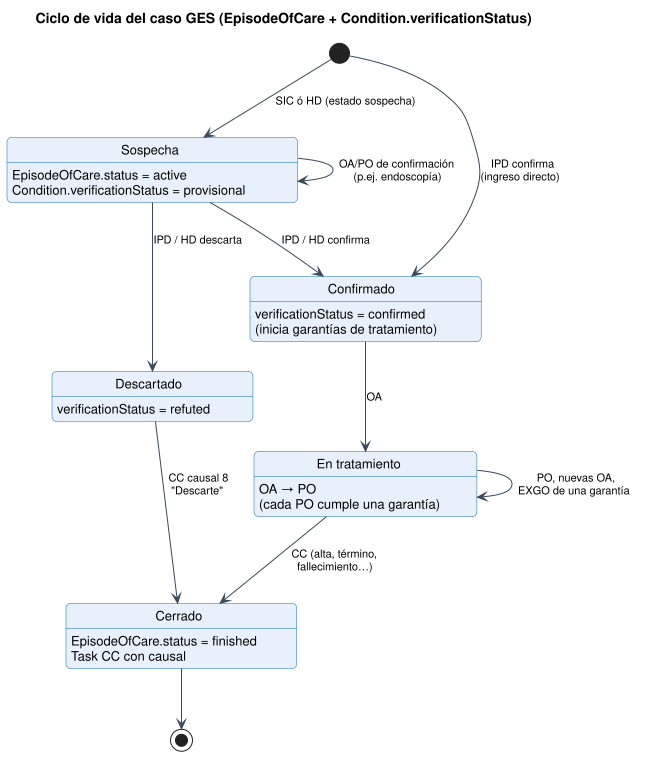
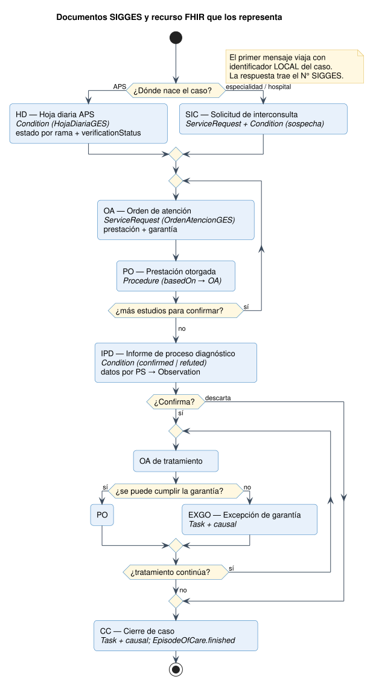
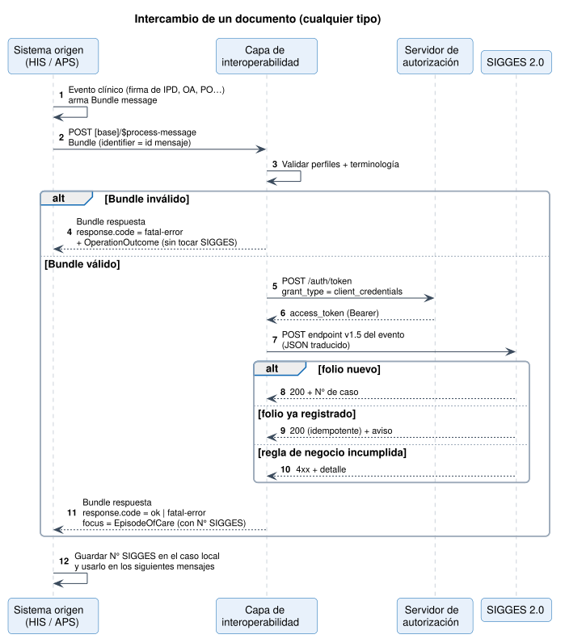
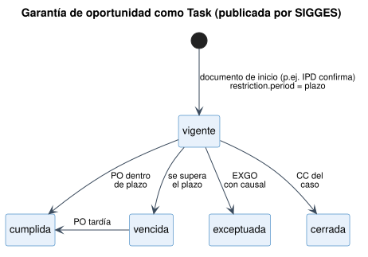

Notificación de Casos GES a SIGGES 2.0
0.4.0 - ci-build

Notificación de Casos GES a SIGGES 2.0
0.4.0 - ci-build

Notificación de Casos GES a SIGGES 2.0 - Local Development build (v0.4.0) built by the FHIR (HL7® FHIR® Standard) Build Tools. See the Directory of published versions
Esta página describe el proceso: qué documentos existen, en qué orden ocurren y cómo se intercambia cada uno. El detalle de cada recurso está en Documento por documento.
Un caso GES es un paciente + un problema de salud + una rama. En FHIR es un EpisodeOfCare (CasoGES). Su estado clínico lo determina el verificationStatus del último diagnóstico, y su estado administrativo lo determina EpisodeOfCare.status.

| Estado | EpisodeOfCare.status |
Condition.verificationStatus |
Documento que lo produce |
|---|---|---|---|
| Sospecha | active |
provisional |
SIC, HD (estado sospecha) |
| Confirmado | active |
confirmed |
IPD, HD (estado confirmado) |
| En tratamiento | active |
confirmed |
OA / PO de tratamiento |
| Descartado | active hasta el CC |
refuted |
IPD, HD (estado descartado) |
| Cerrado | finished |
(sin cambio) | CC |

| Documento | Código SIGGES | Evento | Recurso foco | Perfil |
|---|---|---|---|---|
| Solicitud de interconsulta | 1 | SIC |
ServiceRequest (+ Condition de sospecha) | SolicitudInterconsultaGES |
| Informe de proceso diagnóstico | 2 | IPD |
Condition | InformeProcesoDiagnosticoGES |
| Orden de atención | 3 | OA |
ServiceRequest | OrdenAtencionGES |
| Prestación otorgada | 10 | PO |
Procedure | PrestacionOtorgadaGES |
| Cierre de caso | 30 | CC |
Task | CierreCasoGES |
| Hoja diaria APS | 32 | HD |
Condition | HojaDiariaGES |
| Excepción de garantía de oportunidad | 34 | EXGO |
Task | ExcepcionGarantiaGES |
El mismo patrón sirve para los 7 documentos.

Reglas del flujo
EpisodeOfCare viaja solo con identifier[casoLocal].MessageHeader.focus → EpisodeOfCare.identifier[casoSIGGES]. El sistema de origen debe guardarlo y enviarlo en todos los mensajes siguientes del caso.identifier[folio] del recurso foco (folioDocumentoHospital) es único por establecimiento y actúa como clave de idempotencia: si se reenvía el mismo folio, no se duplica el registro.Procedure.basedOn), y una OA puede imputarse a una garantía (extension[garantia]).basedOn y por el caso.Las garantías no las envía el establecimiento. SIGGES las calcula y las publica como Task (GarantiaOportunidadGES), con su plazo en restriction.period. El establecimiento las lee en la consulta de casos y actúa sobre ellas con OA, PO o EXGO.

Pendiente con FONASA. El catálogo actual no informa el plazo en días ni, en general, qué documento inicia y cuál cumple cada garantía. Solo 6 de 707 garantías lo indican, y lo hacen dentro del texto. Ver Observaciones.